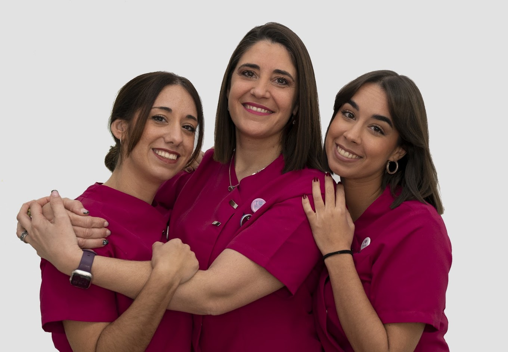

Dirección
Clínica Dental Doctor Babío
C. Canal, 2, 1ºL
41006 Sevilla

Clínica Dental Doctor Babío
C. Canal, 2, 1ºL
41006 Sevilla
Para qué puedes contactarnos
Pacientes que quieren saber si su caso permite una solución fija en un plazo corto.
Casos donde la sonrisa y la naturalidad del resultado son especialmente importantes.
Pacientes con implantes previos problemáticos o con dudas sobre su tratamiento.